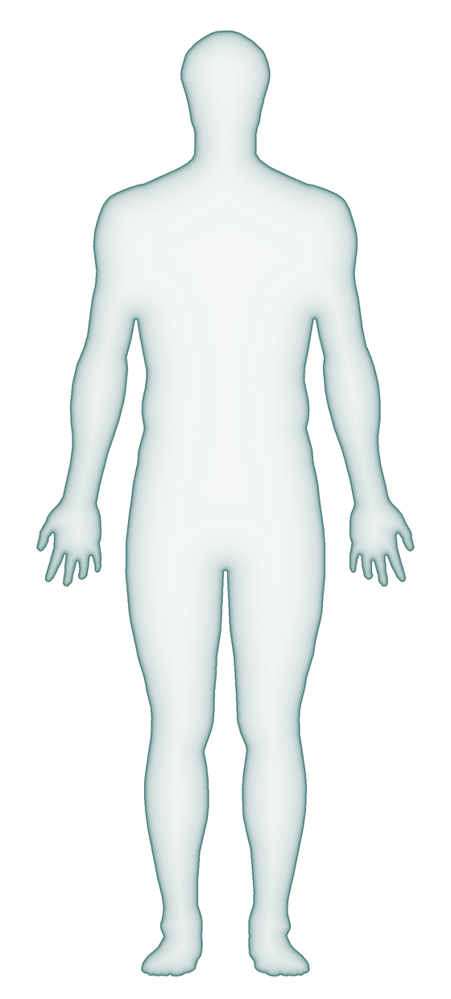
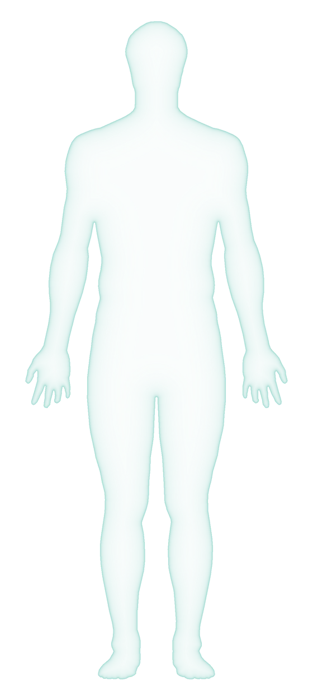
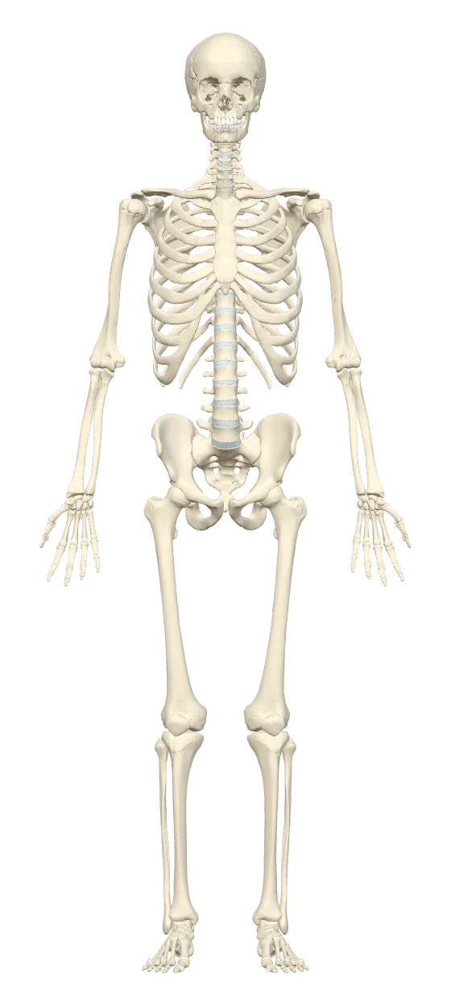
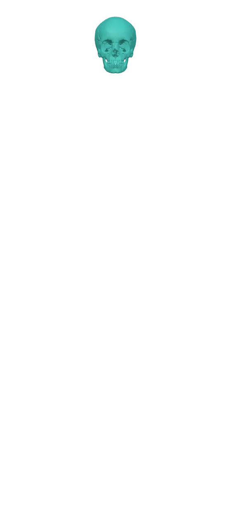
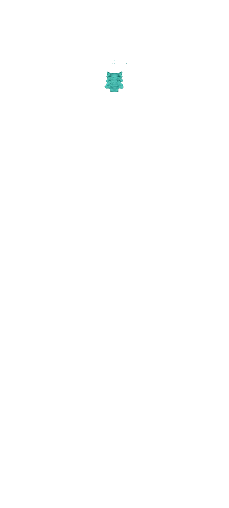
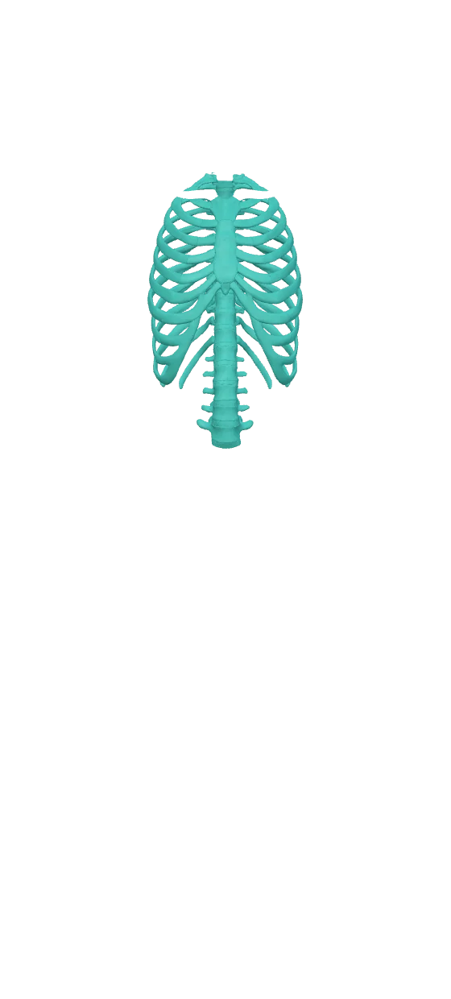
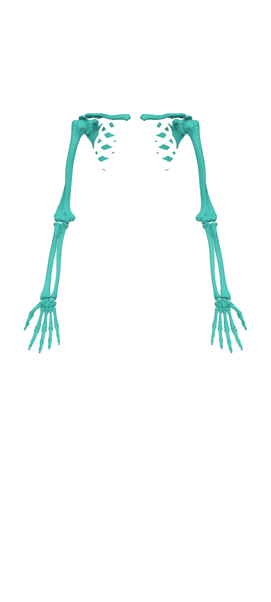
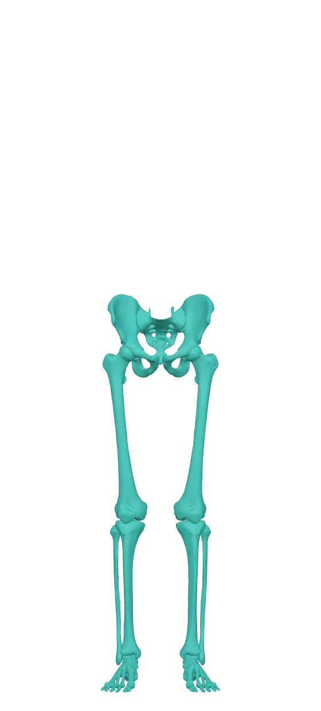

«Чёткое» сохраняет резкость при вращении, но сильнее нагружает телефон. Учебные цвета костей можно отключить.
Срез открывает поверхность модели. Цвета сохраняют принадлежность к костям.
Атлас мышц и костей. Выбери часть тела на фигуре или в списке. Внутри раздела можно открыть подразделы и нажать на любую мышцу, кость или точку на кости.








Модели показывают правую сторону тела. Разделы с пометкой «скоро» появятся позже.
Кнопка с человечком слева вверху возвращает к схеме тела, где выбираются разделы. Под заголовком раздела — подразделы: например, у руки это плечевой пояс, плечо, предплечье и кисть. В подразделе остаются только его мышцы, а остальные кости видны бледно, чтобы было понятно, где ты находишься.
Крути модель одним пальцем, приближай двумя. Нажми на мышцу или кость, чтобы открыть карточку. Кнопка «Повернуть» переключает стандартные ракурсы. Для головы, шеи и грудного отдела доступны виды спереди, справа, сзади, слева, сверху и снизу.
«Свободная камера» (в настройках вида) позволяет облетать модель: кнопки «Вверх», «Вниз», «Вперёд», «Назад» перемещают камеру, а движение пальцем или мышью поворачивает взгляд на месте. Двумя пальцами или правой кнопкой мыши камеру можно сдвинуть, щипком или колесом — подлететь ближе. На клавиатуре: W A S D, E — вверх, Q — вниз. «Обычная камера» снова вращает модель вокруг того, что сейчас перед тобой.
Подчёркнутые слова в карточках можно нажать: появится простое объяснение термина. Все термины собраны в словарике ниже.
У мышц из нескольких частей или головок в карточке есть кнопки частей. В карточке кости перечислены её образования TA98: бугорки, ямки, края, отростки и поверхности. Точки показывают подтверждённые ориентиры на модели. У выбранной мышцы бирюзовые точки обозначают начало, фиолетовые — прикрепление.
«Слои» снимают мышцы по глубине: −1 убирает поверхностный слой, −2 ещё один, «Кости» оставляет скелет. «Тест» подсвечивает мышцу и предлагает четыре варианта.
В голове по умолчанию включены «Цвета костей»: у каждой кости свой учебный цвет, одинаковый справа и слева. Это условная раскраска для запоминания. Кнопка «Легенда» показывает названия и позволяет выбрать кость. Чтобы увидеть весь цветной череп, выбери слой «Кости». Настройка цвета сохраняется; во время теста раскраска временно отключается.
«Срез черепа» позволяет убрать часть модели в одной из трёх плоскостей и рассмотреть внутреннюю поверхность. Ползунок перемещает срез; «Другая сторона» меняет оставленную половину. Срез показывает существующую геометрию модели.
«Учебные группы» открывают восемь направлений: кости, основание черепа, глазницы и полость носа, пазухи, челюсти, ухо, мышцы и варианты строения. Переключай готовые виды и выбирай структуры, чтобы открыть карточки. Для костей доступны модели Z-Anatomy и микро-КТ, для уха — отдельный препарат OpenEar с 13 ориентирами слуховых косточек. Каждый источник имеет собственную геометрию; координаты точек между моделями не переносятся. Каталог вариантов показывает типичные места без подтверждённой геометрии вариантов. «Вернуться к атласу» сохраняет прежний выбор.
«Череп как целое» содержит все 97 терминов отдельной главы TA98: области, составные образования и виды. «Проверка формы» показывает результаты осмотра всех 521 костных записей: что видно целиком в указанном объёме, что частично, а что не подтверждено. Эта проверка отделена от наличия точки. В группе мышц есть перечень начал и прикреплений; сведения всей мышцы в карточке её части подписаны отдельно. Источники каждого утверждения раскрываются вместе с точным местом в тексте.
3D-модели и скелет на стартовом экране: BodyParts3D, © The Database Center for Life Science, лицензия CC BY-SA 2.1 Japan. Модели мышц упрощены, структуры сгруппированы и преобразованы в GLB для браузера. Производные модели этого атласа распространяются по той же лицензии. Статья о базе.
Четыре сесамовидные кости I пальца кисти — учебная реконструкция по КТ замороженного тела Visible Human Male: Courtesy of the U.S. National Library of Medicine (Visible Human Project, условия NLM). NLM не одобряет этот атлас; модели не являются самыми актуальными или точными данными NLM. Это другое тело: кости размещены совмещением I пястной кости с моделью атласа, форма сглажена разрешением КТ.
Показаны 22 кости мозгового и лицевого черепа, мимические и жевательные мышцы обеих сторон, сухожильный шлем. Зубы служат ориентиром. Слуховые косточки, мышцы глазного яблока, языка и глотки в этот раздел пока не входят.
У девяти карточек мышц нет отдельной модели: это ушные мышцы, мышцы, опускающие бровь, и поперечная мышца подбородка. Некоторые части мышц доступны только как карточки. Такое ограничение указано рядом с описанием.
У каждого образования черепа из списка TA98 есть маркер и описание со ссылками. Сплошная обводка обозначает участок поверхности, пунктирная — анатомическую проекцию или вариант строения: мелкое образование может быть не прорисовано в самой модели. Один маркер не показывает всю поверхность или ход канала. Различие объяснено в карточке. Кнопка «Просвечивать кость» помогает увидеть ориентиры с внутренней стороны.
Раздел «Шея» содержит C1–C7, подъязычную кость и 62 мышечных экземпляра с обеих сторон. Переключай подразделы, чтобы разобрать поверхностные, над- и подподъязычные, глубокие передние, задние и подзатылочные мышцы, связь с плечевым поясом. Цвета костей помогают различать уровни позвонков. Для 100 из 138 костных записей проверено положение маркера; у остальных есть текстовое объяснение без выдуманных координат. Общие и региональные термины TA98 применены к позвонкам по указанным источникам, а составные образования вынесены отдельно. «Состав раздела и ограничения» перечисляет следующие самостоятельные задачи.
Карточки шеи содержат ссылки по полям на открытые анатомические тексты Gray, университетские таблицы, современные учебные статьи и номенклатуру TA98. Различия источников сохранены. Исходная модель мышцы не подтверждает автоматически все её прикрепления или границы частей.
«Грудной отдел» — T1–T12, 24 ребра, грудина и 43 мышечные карточки. Подразделы отделяют грудную стенку, диафрагму, мышцы плечевого пояса и спины. Межрёберные и некоторые глубокие мышцы представлены исходными группами. Подрёберные, грудные межпоперечные и непостоянная грудинная мышца имеют описание без отдельной сетки. Образования диафрагмы перечислены в её карточке; отверстия не дорисовываются. Цвета различают уровни позвонков и пары рёбер. Органы, сосуды, нервы, суставы, связки и фасции будут отдельными модулями.
Для исходных разделов руки и ноги использованы сводная таблица мышц по Gray's Anatomy (Wikipedia) и TeachMeAnatomy. В новых карточках головы приведены ссылки на использованные открытые учебные статьи, таблицы Loyola University и DEGUM, а для спорных вопросов — анатомические исследования. Неподтверждённые сведения не заполнены догадками.
Где русские и англоязычные учебники расходятся, это написано прямо в карточке: большая и малая грудные мышцы, подключичная, плечелучевая и локтевая мышцы, наружная запирательная мышца, короткий сгибатель большого пальца стопы.
Латинские названия даны по международной анатомической терминологии (Terminologia Anatomica, TA98).
Полнота перечня терминов проверяется отдельно от положения 3D-точек. Основа — Terminologia Anatomica (1998) и русское издание под ред. Л. Л. Колесникова (2003). Карточка каждой кости содержит полный предусмотренный для неё перечень и коды TA98. Для черепа дополнительно указано, сколько образований отмечено на модели. Расхождения между печатным TA98 и электронной таблицей IFAA пояснены в соответствующих карточках.
Примеры: тазовая кость — 46 образований (8 общих, 21 у подвздошной части, 5 у седалищной, 12 у лобковой), бедренная — 28, большеберцовая — 23, лопатка — 22, плечевая — 28, лучевая — 19, локтевая — 16. У каждой фаланги 4: основание, тело, головка и блок (у дистальной вместо блока — бугристость). У некоторых костей (полулунная, трёхгранная, клиновидные) в списке нет ни одного отдельного образования — так и написано в их карточках.
Непостоянные образования (бывают не у всех людей, в списке они в скобках) помечены «непост.»: надмыщелковый отросток плечевой кости, третий вертел, задний запирательный бугорок, центральная и треугольная кости. Места прикрепления мышц, у которых нет своего термина, показаны отдельно и в счёт не входят. Списки сверены с электронной версией TA98 на сайте IFAA: кости руки, кости ноги, крестец и копчик. В этой электронной версии одна строка таранной кости (A02.5.10.015) показана с ошибкой «ERR1»; по карточке термина это facies malleolaris medialis. Там же два термина с длинным сгибателем большого пальца записаны с непривычным порядком слов (musculi longi flexoris hallucis); в атласе оставлена форма musculi flexoris hallucis longi — как в названии самой мышцы.
Перед экзаменом всё равно сверяйся с учебником своей кафедры: в мелочах учебники могут отличаться.
Короткой ладонной мышцы в модели нет, у неё только карточка.